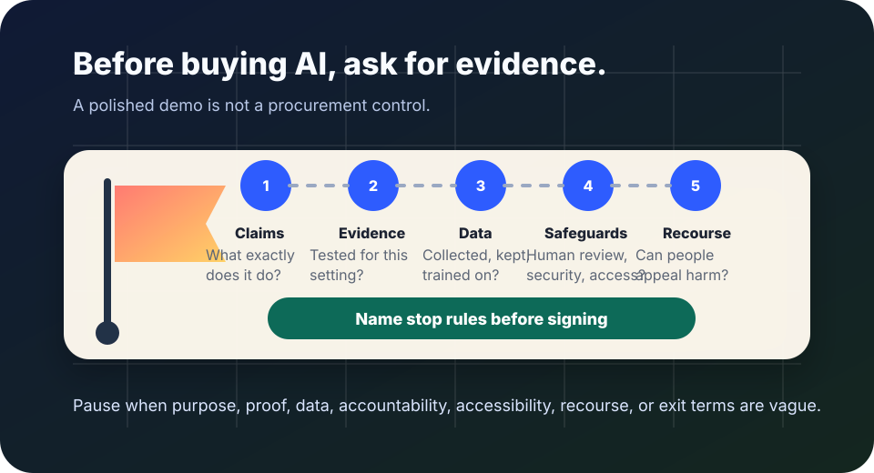

AI procurement
AI procurement red flags: pause before the product becomes infrastructure.
Use this before buying, renewing, piloting, or expanding an AI product. The goal is not to block every tool. It is to notice warning signs early enough that a school, workplace, agency, nonprofit, or small team can ask for evidence, narrow the use, add safeguards, or walk away.
The short answer
An AI procurement red flag is a sign that the vendor or buyer cannot yet explain what the system does, how it was tested, what data it uses, who is accountable, how people can challenge harm, and when the tool should not be used.
NIST’s AI Risk Management Framework emphasizes valid and reliable systems, risk monitoring, transparency, accountability, and attention to harmful bias. The OECD AI Principles emphasize human-centered values, transparency, robustness, security, safety, and accountability. Procurement should turn those values into evidence before a contract or renewal makes the tool hard to remove.

When to use this checklist
Use it before commitment
- an AI vendor demo looks impressive but the real workflow is not tested;
- a contract, pilot, renewal, or integration would make the tool hard to leave;
- the system will affect access, eligibility, safety, learning, employment, benefits, healthcare, housing, finance, policing, or public services;
- staff are being asked to trust model outputs without clear review duties.
Do not treat it as legal clearance
- This page is practical education, not legal, security, accessibility, or procurement advice.
- High-stakes uses need qualified legal, privacy, security, disability-rights, domain, labor, and affected-community review.
- A vendor answer is not enough by itself; ask for documents, test results, contract terms, and accountable owners.
Ten red flags to investigate before buying AI
- “AI-powered” is the main explanation. If the vendor cannot explain the actual task, model role, inputs, outputs, human review points, and limits in plain language, pause.
- Accuracy is advertised without context. Ask what was measured, on whose data, under what conditions, compared with what baseline, and how performance changes for relevant groups, languages, disabilities, edge cases, or low-quality inputs.
- No meaningful evaluation evidence is available. A demo, case study, or benchmark is not the same as evidence that the tool works in your setting. Ask for validation methods, failure examples, update history, and independent or customer-side testing rights.
- Training, customer, or user data terms are vague. Ask what data is collected, retained, shared, used for model improvement, deleted, logged, audited, or transferred. If the answer depends on hidden settings or future policy changes, treat that as contract risk.
- The vendor shifts all accountability to users. A useful product should define vendor responsibilities, customer responsibilities, audit access, support, incident response, accessibility fixes, security reporting, and escalation paths.
- There is no appeal, correction, or human-supported route. If an AI score, flag, summary, recommendation, or chatbot can affect a person, there should be a practical way to ask what happened, correct records, challenge the result, and reach a human.
- Accessibility is untested or treated as cosmetic. Ask how the complete workflow works with screen readers, keyboard navigation, captions, plain language, magnification, speech input, translation needs, low bandwidth, and non-AI alternatives.
- Security claims are broad but controls are unclear. Ask for current security documentation, vulnerability handling, access controls, logging, encryption, data location, subprocessors, and how the vendor handles prompt injection, data leakage, and misuse.
- The contract blocks inspection or exit. Watch for terms that prevent evaluation, restrict criticism, hide material changes, lock up your data, make cancellation difficult, or prevent you from notifying affected people after a serious failure.
- No stop rules are named. Before launch, define what evidence would delay deployment, limit use, require human review, notify people, roll back the tool, or end the contract.
If the vendor cannot answer basic questions about purpose, evidence, data, safeguards, recourse, accessibility, security, and exit, do not let urgency turn uncertainty into infrastructure.
A short vendor question script
Use this in writing so answers can become procurement evidence, not meeting fog.
What exact decision, recommendation, workflow, or content task does your AI perform for our use case, and what should it not be used for?
What evaluation evidence shows it works for people like ours, data like ours, languages like ours, and edge cases like ours? Please include failure modes, not only success metrics.
What customer, user, uploaded, generated, and log data do you collect, retain, use for training or improvement, share with subprocessors, and delete on request or contract end?
How can an affected person understand, correct, appeal, or bypass an AI-assisted result? What equivalent non-AI or human-supported route exists?
What contract terms guarantee audit access, accessibility remediation, security reporting, incident notice, data export, model-change notice, and exit without penalty?
Green signs that lower risk
- Clear scope: the product names what it does, what it does not do, and who remains responsible.
- Local testing rights: the buyer can test on realistic examples before launch and after major changes.
- Evidence over promises: the vendor shares methods, limits, failure cases, and update notes in plain language.
- People can contest harm: recourse, correction, accessibility support, and human escalation are built into the workflow.
- Exit is possible: data export, deletion, cancellation, and fallback operations are documented before dependence grows.
Sources and further reading
- NIST — AI Risk Management Framework
- NIST — AI RMF Playbook
- OECD.AI — OECD AI Principles overview
- European Commission — AI Act regulatory framework overview
- UK Government — Guidelines for AI procurement
- ISO/IEC 42001:2023 — AI management system standard overview
- W3C — Web Content Accessibility Guidelines (WCAG) 2.2